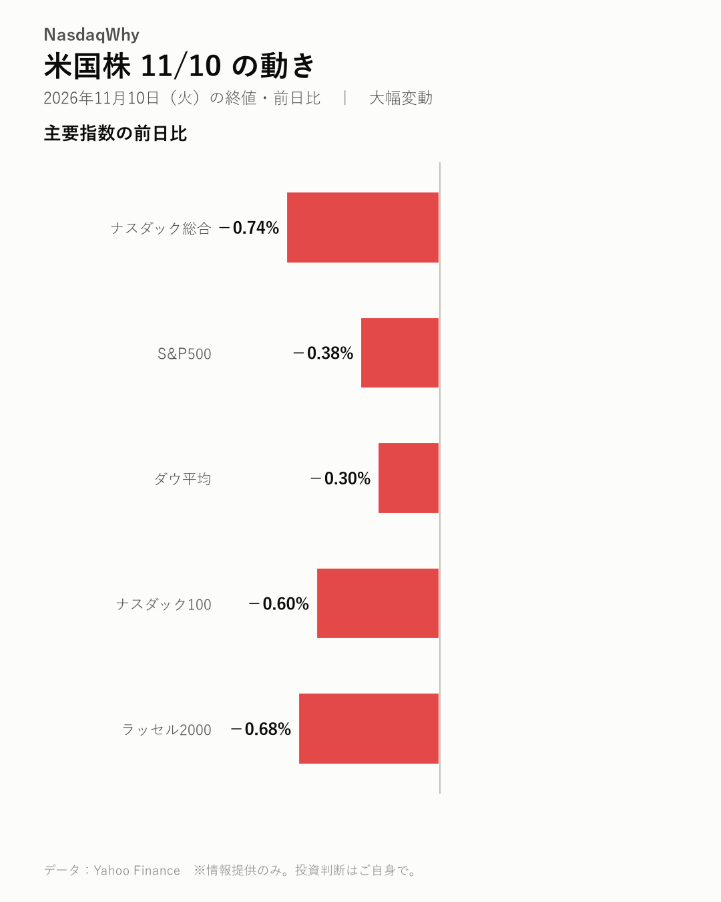
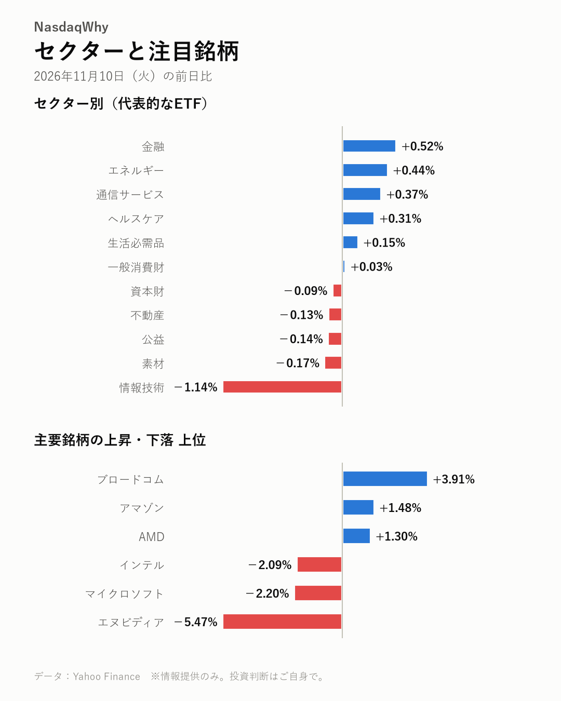

11/10の米国株：エヌビディアがCEOを巡る疑惑で急落した。ハイテク株が重荷となり、主要指数はそろって下げた。
2026年11月10日（火）の米国市場（日本時間の翌朝更新） ｜ 大幅変動

主要指数
| 名前 | 終値 | 前日比 | 騰落率 |
|---|---|---|---|
| ナスダック総合 | 25,065.88 | -187.27 | -0.74% |
| S&P500 | 7,520.93 | -29.01 | -0.38% |
| ダウ平均 | 52,231.89 | -157.86 | -0.30% |
| ナスダック100 | 27,740.79 | -166.84 | -0.60% |
| ラッセル2000 | 2,821.38 | -19.43 | -0.68% |
なぜ動いた？
- エヌビディアCEOと関係のあった中国のスパイ容疑者が、半導体の対中流出に関わったとの報道が出た。同社株への売りが膨らんだ。（出典：Yahoo Finance、Tom's Hardware、Tom's Hardware）
- 目標株価の引き下げ、集団訴訟、対中輸出規制の強化論が重なった。エヌビディアの先行き不安が強まった。（出典：Investor's Business Daily、Tom's Hardware、MarketWatch）
- CPIの発表とウォラーFRB理事の利上げ支持が意識された。米金利が上がり、株式の重荷になった。（出典：TradingNEWS、Yahoo Finance）
- ブロードコムとAMDは逆行高。エヌビディアの混乱が追い風になるかを見極める買いが入った。（出典：Yahoo Finance、MarketWatch）
深掘り：大きく動いた背景
エヌビディア株が急落し、相場全体を押し下げた。株価は-5.47%と前日に続く大幅安だった。ナスダック総合は-0.74%。時価総額ではマイクロソフトに抜かれた。 発端は、ジェンスン・フアンCEOと中国のスパイ容疑者とされる女性の関係だ。同社の取締役会は調査に乗り出した。トランプ大統領はFBIも捜査していると述べた。トムズ・ハードウェアによると、この女性は禁輸対象の半導体を中国へ流す手助けをしたとされる。疑惑が事業そのものに及ぶとの懸念から、売りが膨らんだ。 影響は株価だけにとどまらない。米国では対中輸出規制を強める法案に勢いがついているとの声が出ている。株価の下落を受け、集団訴訟も起こされた。複数の証券会社は目標株価を下げた。SupermicroやDellなどAIサーバー株にも売りが広がった。消費者物価指数（CPI）の結果と金利上昇も重荷だった。 市場では、同社がCEOに大きく頼っている点が改めて意識されている。後継者がはっきりしないことを不安視する見方がある。反対に、売られ過ぎとみて買う投資家もいる。キャシー・ウッド氏は同社株を買い増した。ブロードコムやAMDには、顧客が移るかを見極める買いが入った。
セクター
情報技術は-1.14%と下げが目立った。エヌビディアの急落がAIサーバー関連にも及んだ。金融、エネルギー、通信サービス、ヘルスケアは上昇した。
- 騰落率の高い順：金融 +0.52%、エネルギー +0.44%、通信サービス +0.37%
- 騰落率の低い順：情報技術 -1.14%、素材 -0.17%、公益 -0.14%

注目銘柄
エヌビディアは-5.47%と大幅安だった。マイクロソフトも-2.20%と下げた。ブロードコムは+3.91%、AMDは+1.30%と上昇した。エヌビディアの顧客が流れるかを探る動きだ。
- 上昇：ブロードコム（AVGO）+3.91%、アマゾン（AMZN）+1.48%、AMD（AMD）+1.30%
- 下落：エヌビディア（NVDA）-5.47%、マイクロソフト（MSFT）-2.20%、インテル（INTC）-2.09%
半導体トピック
- TSMCはAI半導体の強い需要を受け、月次売上を大きく伸ばした。（digitimes）
- モルガン・スタンレーは、サムスン電子とSK hynixの目標株価を下げた。（BigGo Finance）
- 韓国メディアは、調査の影響がメモリー大手には短期的に限られるとみる。（Chosunbiz）
関連市場
| 名前 | 終値 | 前日比 | 騰落率 |
|---|---|---|---|
| 米10年債利回り | 4.983% | +0.119pt | ― |
| ドル円 | 158.74 | +0.44 | +0.28% |
| 金先物 | 4,038.60 | -75.90 | -1.84% |
| 原油先物(WTI) | 86.40 | -0.45 | -0.52% |
| ビットコイン | 73,887.07 | -1,336.08 | -1.78% |
米10年債利回りは4.983%に上昇した（前日比+0.119ポイント）。ドル円は+0.28%で円安ドル高。金先物は-1.84%、原油先物(WTI)は-0.52%、ビットコインは-1.78%と下げた。
今後の注目
- エヌビディアの決算発表と、事業見通しへの影響（Yahoo Finance）
- 取締役会とFBIによる調査の進み具合（Yahoo Finance、Tom's Hardware）
- 対中輸出規制を強める法案の行方（MarketWatch）
- 12/9（水） FOMCの金融政策発表と利上げの有無（公式発表、Yahoo Finance）
出典（見出し）
- Yahoo Finance：Nvidia stock drops 6%, extending decline on report alleged Chinese spy linked to Nvidia CEO aided $7.5 billion in China chip shipments（記事）
- Tom's Hardware：Alice Huang reportedly instrumental in securing over $7.5 billion of Nvidia AI GPU imports during three-year relationship with Jensen Huang — helped move 240,000 banned chips into China, mostly H100 and H200（記事）
- Tom's Hardware：President Trump says the FBI is investigating Jensen Huang’s affair with suspected Chinese spy — Nvidia also accused of intervening in Megaspeed chip smuggling investigation（記事）
- Investor's Business Daily：Nvidia Stock Hit With Price-Target Cuts Amid Spy Scandal（記事）
- Tom's Hardware：Law firm files class-action lawsuit against Nvidia after CEO Jensen Huang confirms affair with alleged Chinese spy — more to come as multiple other law firms investigate securities fraud following stock drop（記事）
- MarketWatch：Nvidia could soon face tougher export rules, making it harder to sell chips to China after scandal（記事）
- TradingNEWS：Stock Market Today: S&P 500 −0.7%, Nasdaq −0.9%, Dow Slide on 0.4% CPI; NVDA −5%, 7,650 Target（記事）
- Yahoo Finance：Fed's Waller backs a rate hike, Nvidia stock under pressure, Paul McCartney becomes a billionaire（記事）
- Yahoo Finance：NVIDIA Falls 4% as Board Probe of Jensen Huang Weighs on Shares; AMD and Broadcom Gain 3%（記事）
- MarketWatch：AMD’s stock fades as investors weigh whether Nvidia’s turmoil will mean lasting wins（記事）
- digitimes：TSMC October 2026 revenue surges 59.7% on strong AI chip demand（記事）
- BigGo Finance：Morgan Stanley Cuts Samsung Electronics, SK Hynix Price Targets: "The Real Warning Is the 2028 Earnings Cliff"（記事）
- Chosunbiz：Nvidia probe over Huang affair clouds outlook; limited short-term impact on Samsung, SK hynix（記事）
- Yahoo Finance：Nvidia Stock Falls as Citi Trims Price Target Ahead of Earnings（記事）
データ：Yahoo Finance